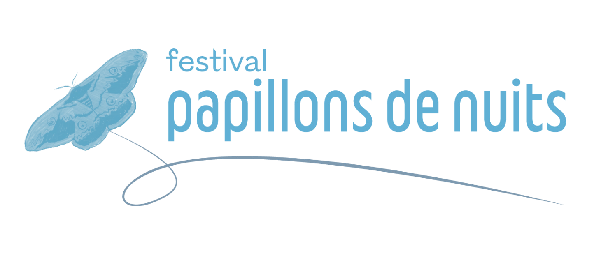
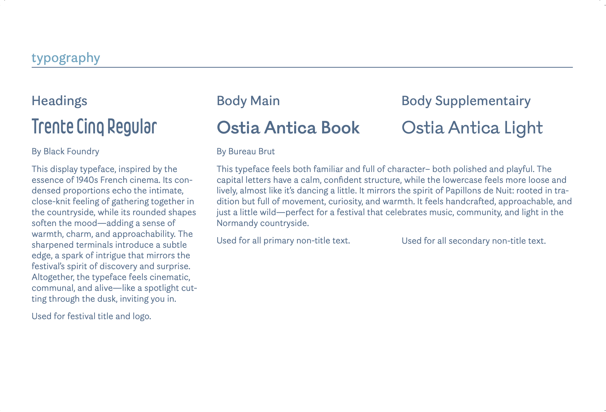
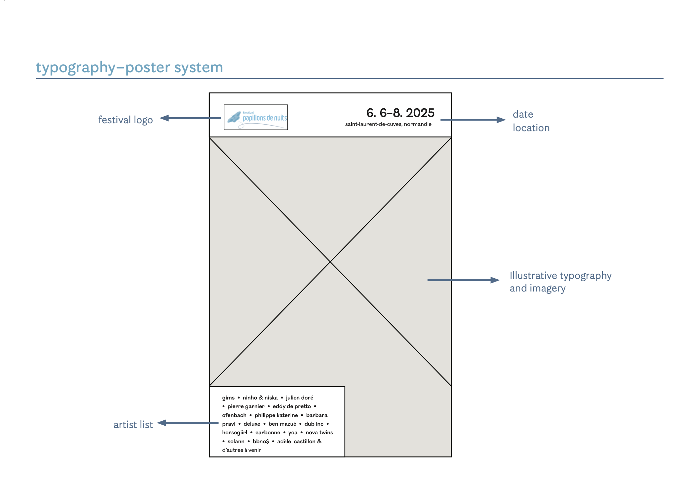
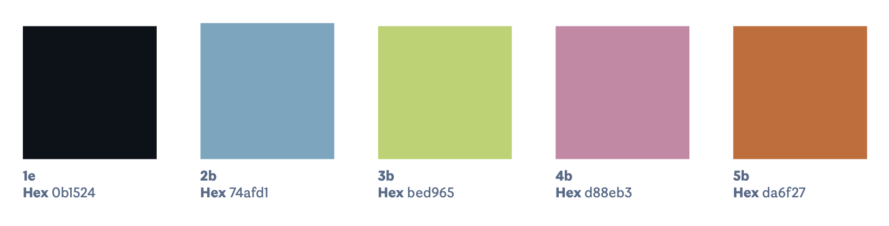
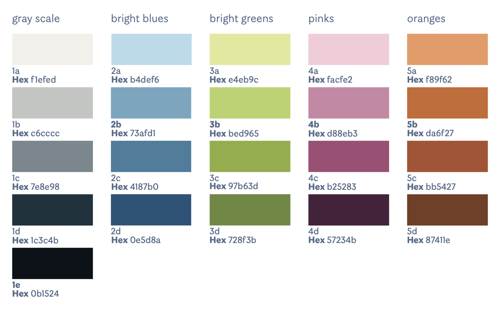
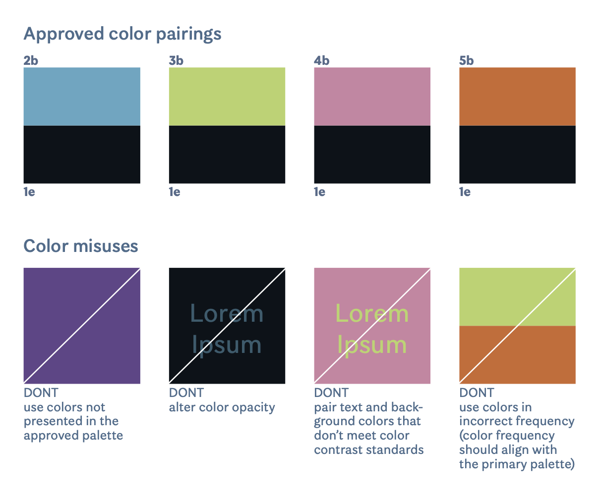
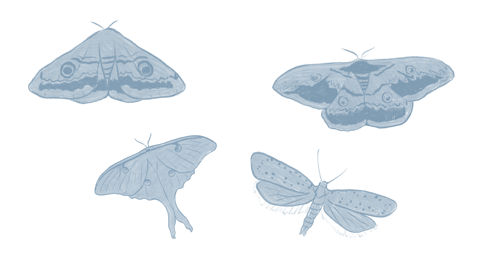
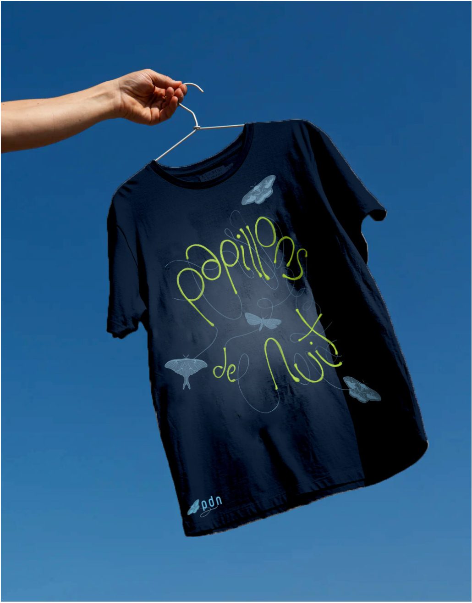
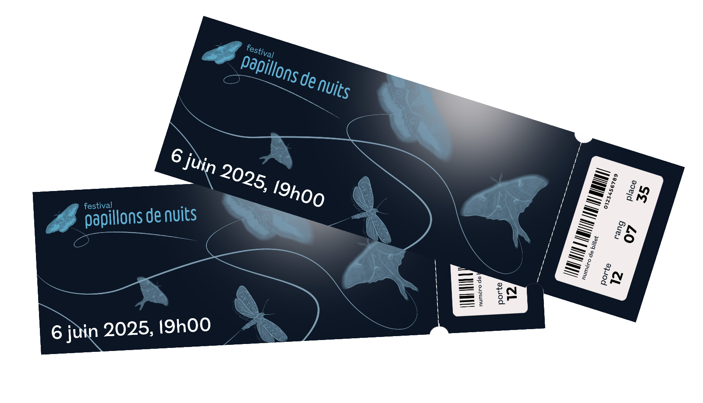

Overview
In the heart of Normandy, Festival Papillons de Nuit draws music lovers from near and far, transforming the peaceful countryside into a vibrant hub of sound and energy. The festival is known for its community focus, "good vibes," celebration of diverse artists and musical discovery, sustainable practices, and strong history.
The name Papillons de Nuit (French for "Night Butterflies" or "moths") captures the essence of the festival, a celebration of transformation, freedom, and the natural world. Like moths drawn to light, festival-goers are attracted to the energy of the event, converging in a place of shared experience and discovery.
Focus Areas
Typography, Layout, Color Theory, Composition
Tools
Adobe InDesign, Illustrator, Photoshop
Values
Local
Rooted in the heart of Normandy, we honor the culture, people, and landscape that surround us. The festival is a celebration of place and the creative energy it inspires.
Welcoming
Open to all, the festival is a space where everyone feels at home. From first-timers to lifelong fans, we foster a warm, inclusive atmosphere where connection thrives.
Eclectic
Our lineup and experience reflect a broad spectrum of styles, voices, and genres. We embrace contrast and variety, celebrating the richness it brings.
Exploratory
Papillons de Nuit is a place to roam—musically, socially, emotionally. We encourage attendees to follow their instincts and uncover the unexpected.
Creative
Creativity is at our core. We see the festival as a living work of art—crafted with care, filled with expression, and open to interpretation.
Vibrant
The energy is alive. Colorful, rhythmic, radiant—Papillons de Nuit pulses with life, day and night.
Logo

The Papillons de Nuit logo is a key identifier of the festival. It reflects the organic, exploratory nature of the event, incorporating hand-drawn elements that symbolize movement and transformation. The logo should always be used with clarity and contrast in mind, ensuring visibility across digital and print materials.
Typography

Poster System
The Papillons de Nuit poster system is designed to feel both dynamic and grounded, like the festival itself. The underlying grid provides hierarchy, structure, and consistency across layouts while allowing space for expressive, flexible compositions that reflect the festival's eclectic and exploratory nature.
The grid is modular and rhythmic, echoing the tempo of music. It guides the placement of type, imagery, and graphic elements, ensuring harmony across each piece without feeling rigid. Imagery often breaks the grid slightly or interacts with it playfully.

Color
Primary Palette
The festival's color palette draws inspiration from the natural surroundings and the radiant energy of live music. Gradient back- grounds are incorporated to represent the light that moths are drawn to, reinforcing the festival's name and thematic connection to nature.
Vivid pops of color are used for title and logo text to highlight a sense of warmth, light, and energy of the festival and to contrast with the cooler blue tones. The blue tones evoke the depth of the night sky and a sense of calm.

Extended Palette
This comprehensive palette allows for informational heirarchy, and, for marketing purposes, allows us to use colors that compliment imagery and messaging.

Color Pairings
This spread features a range of predetermined color pairings for use across marketing materials.
For accessibility, not all color pairings are suitable to use for text. The contrast ratio for text to background is 6:1. Before proceeding with a design which uses colored text on a colored background, test the contrast ratio on WebAIM.org

Imagery
Festival Papillons de Nuit embraces a handcrafted, organic visual style that complements its atmosphere of exploration and community.
Hand-drawn moth illustrations
The moth is central to the visual identity of Papillons de Nuit, symbolizing both the festival's name and its deeper themes of exploration, discovery, and transformation. Moths are naturally drawn to light, and they represent the festival's ability to attract diverse communities, creating a radiant space where people come together under the night sky.
The hand-drawn moth illustration is organic, reflecting the handcrafted, approachable nature of the festival. It feels alive and in motion, capturing the sense of freedom and spontaneity that defines the festival. The moths' delicate wings and dynamic flight paths embody the rhythm of the festival, an ever-changing yet cohesive journey of sound and connection.

Poster Set


Merchandise
Festival Papillons de Nuit embraces a handcrafted, organic visual style that complements its atmosphere of exploration and community, which can be seen across brand merchandise.
The Papillons de Nuit poster series is designed to be visually interconnected, using a shared gradient background and continuous moth flight patterns that extend seamlessly from one poster to the next.

Festival merchandise extends the visual identity across various touchpoints, maintaining consistency with the organic, handcrafted aesthetic that defines the Papillons de Nuit brand experience.
